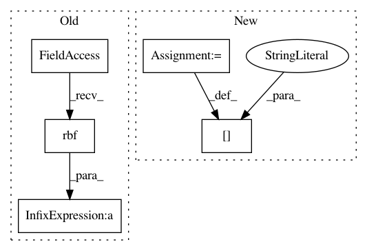

d383403c8e62df942d7fc54da8116ff98cc0b35a,GPy/examples/classification.py,,sparse_crescent_data,#Any#Any#,158
Before Change
Y[Y.flatten()==-1]=0
// Kernel object
kernel = GPy.kern.rbf(data["X"].shape[1]) + GPy.kern.white(data["X"].shape[1])
// Likelihood object
distribution = GPy.likelihoods.likelihood_functions.binomial()
likelihood = GPy.likelihoods.EP(Y, distribution)
After Change
m = GPy.models.sparse_GP_classification(data["X"], Y)
m.ensure_default_constraints()
m[".*len"] = 10.
m.update_likelihood_approximation()
m.optimize()
print(m)
m.plot()
In pattern: SUPERPATTERN
Frequency: 3
Non-data size: 5
Instances
Project Name: SheffieldML/GPy
Commit Name: d383403c8e62df942d7fc54da8116ff98cc0b35a
Time: 2013-06-04
Author: acq11ra@sheffield.ac.uk
File Name: GPy/examples/classification.py
Class Name:
Method Name: sparse_crescent_data
Project Name: SheffieldML/GPy
Commit Name: adb8a98cb36e2718a1b4eb5e2ae6f8fe1d8d1fe2
Time: 2013-06-05
Author: james.hensman@gmail.com
File Name: GPy/examples/regression.py
Class Name:
Method Name: multiple_optima
Project Name: SheffieldML/GPy
Commit Name: d383403c8e62df942d7fc54da8116ff98cc0b35a
Time: 2013-06-04
Author: acq11ra@sheffield.ac.uk
File Name: GPy/examples/classification.py
Class Name:
Method Name: sparse_toy_linear_1d_classification